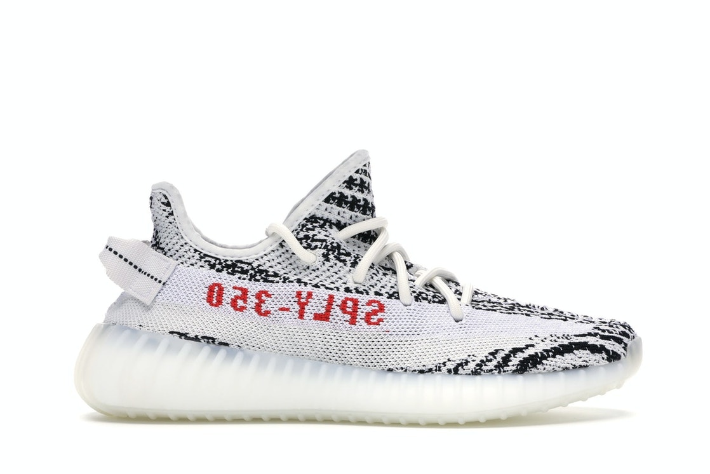
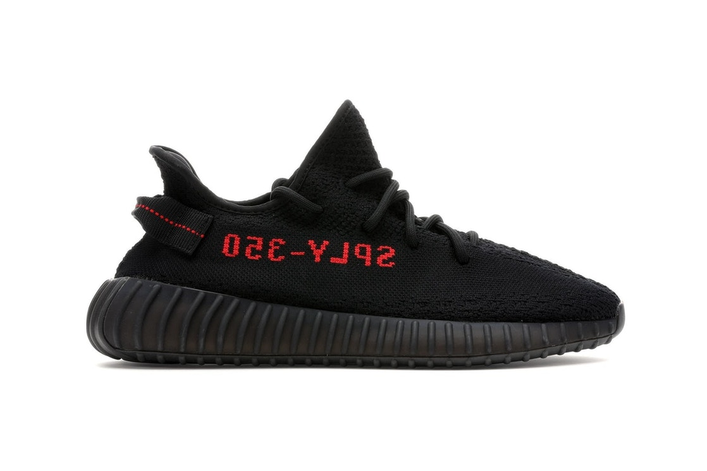
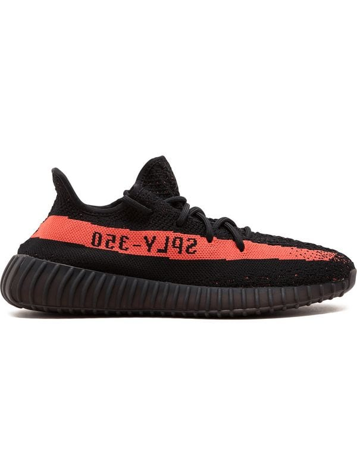
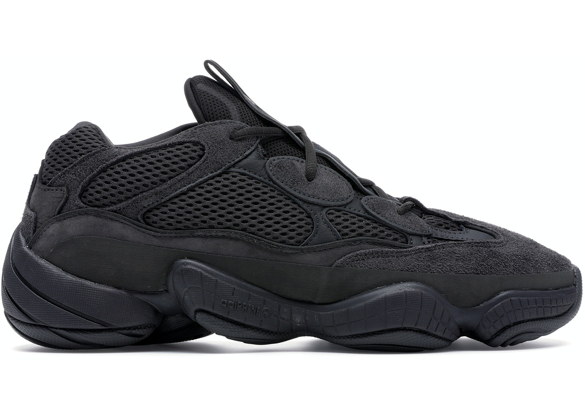
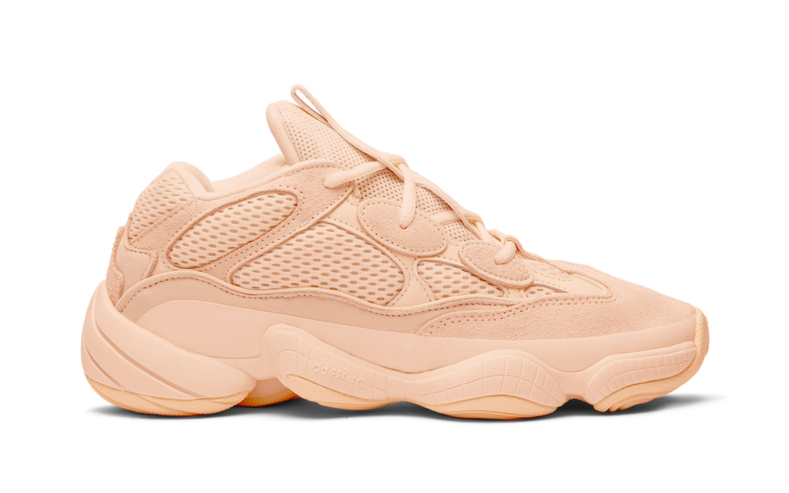
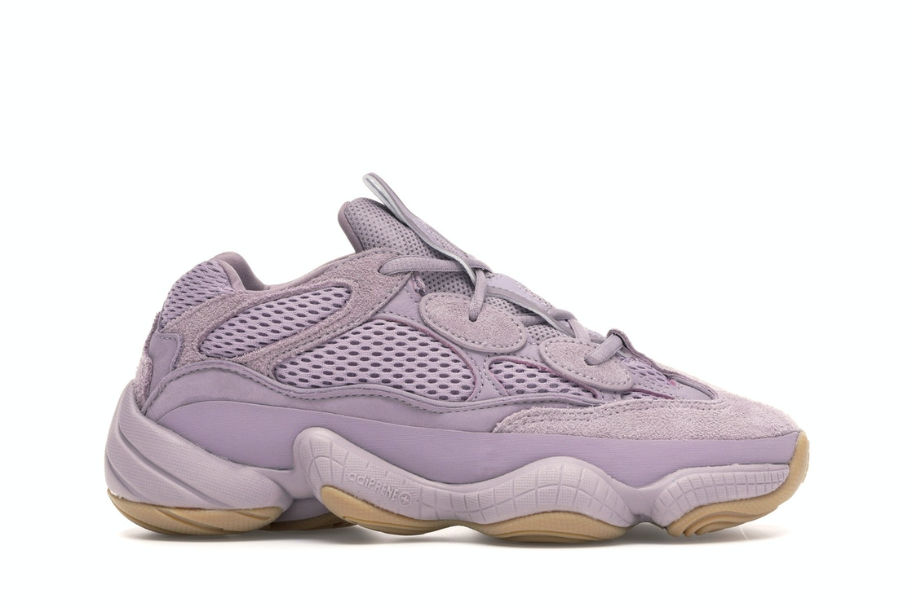
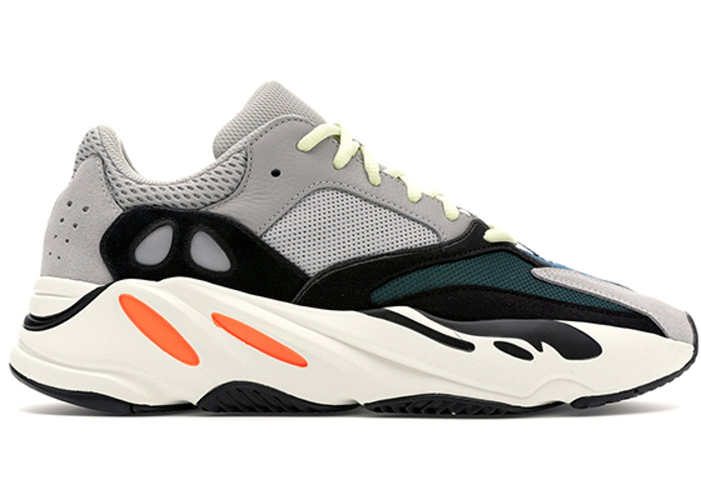
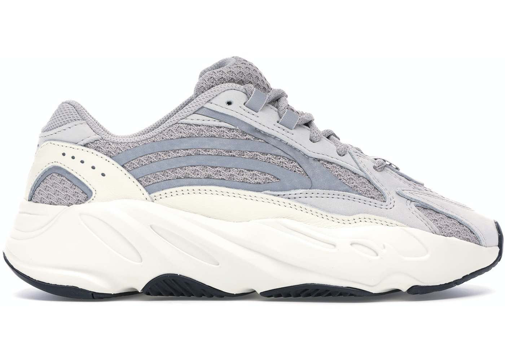
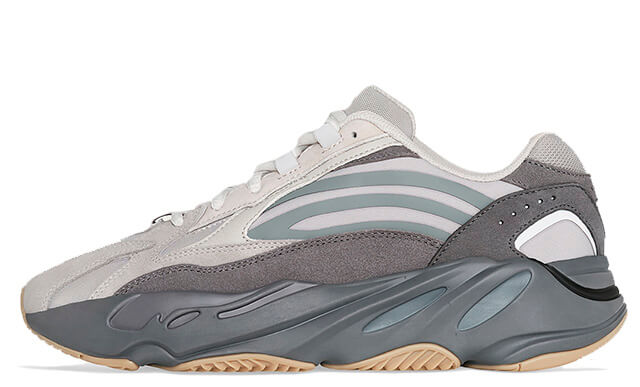

Kanye Omari West (Atlanta, 8 de junho de 1977), também conhecido por Ye ou Yeezy é um rapper, cantor, compositor, produtor musical e estilista americano, nativo de Atlanta, Georgia. West ficou famoso no início de sua carreira como produtor da Roc-A-Fella Records, onde ganhou reconhecimento pelo seu trabalho no álbum The Blueprint, de Jay-Z, assim como por hits para outros cantores como Alicia Keys, Ludacris, Janet Jackson e outros. Atualmente, como cantor, Ye é o 9º artista que mais vendeu músicas em formato digital, além de ter ganhado vários prêmios, incluindo um total de 21 Grammys, sendo assim o maior rapper da história da premiação. Seu estilo de produção originalmente consistia de samples vocais agudos de músicas soul incorporados à sua própria percussão e instrumentos. Contudo, em produções subsequentes, ele aumentou sua paleta musical e expressou influências que abarcam R&B dos anos 70, baroque pop, trip hop, arena rock, folk, música alternativa, música eletrônica, synthpop e música clássica.
Foi em 2006 que o Kanye e a adidas começaram a colaborar. O rapper desenhou para a lendária marca alemã umas sapatilhas que nunca foram lançadas no mercado. Durante anos, as ’06 Yeezus foram todo um mistério, até que o Ben Pruess publicou uma foto das sapatilhas no Instagram. A publicação do director geral da adidas Originals permitiu-nos perceber qual o design criado pelo do rapper: uma versão renovada das Rod Laver Vintage, mas em branco. E, claro, decoradas com o clássico Urso de Peluche na língua, se não, não seriam do Kanye West! Depois, a Nike cruzou-se no caminho do Kanye West e juntos estrearam a coleção Yeezy. Em 2009, foram colocadas à venda as primeiras Nike Air Yeezy, enquanto o segundo modelo chegou em 2012 com um lançamento antecipado. O artista sentia-se um pouco limitado na Nike, e, por isso, decidiu terminar a sua colaboração com eles e unir-se à adidas, desta vez de forma definitiva. O Kanye assinou um contrato de 10 milhões de dólares com a marca para criar designs para a adidas. Já com o controlo criativo que queria, em 2013, o rapper começou a colocar a sua visão artística em cada um dos modelos de sapatilhas. Por ser um artista mundialmente famoso, relançou a sua linha Yeezy, que já se tinha tornado uma lenda a nível global.
YEEZY 350 |
||
|---|---|---|
|  |  |  |
YEEZY 500 |
||
|  |  |  |
YEEZY 700 |
||
|  |  |  |